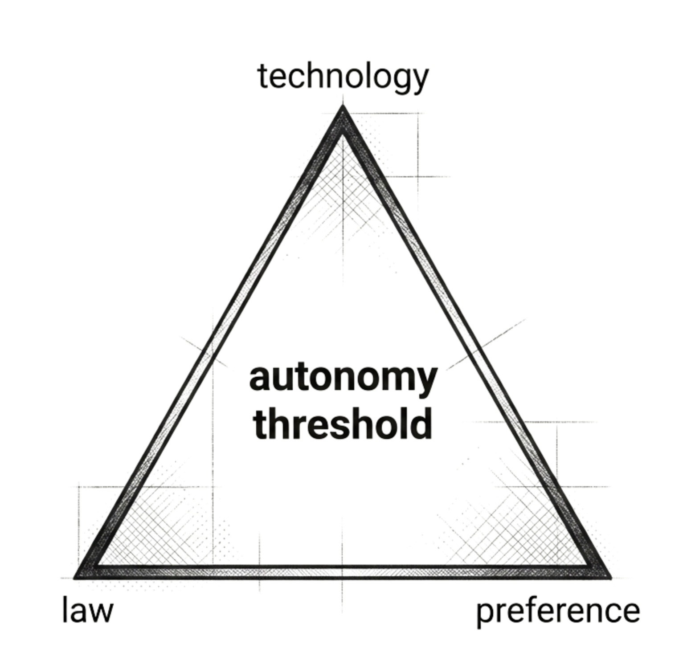

Andrej Karpathy, a founding member of OpenAI and former AI director at Tesla, is one of the most capable programmers in the world. So when he announced in February 2026 that he had stopped writing his own code, people took notice.18 His remark captured fundamental changes in what programming had become.
When tools like GitHub Copilot first appeared, they were celebrated as powerful assistants. They could predict the next few lines, fill in boilerplate, and save hours of typing. But the basic structure of the work remained intact: the human still designed the logic, checked the output, and stayed firmly in control.
But within a few short years, the technology changed the workflow. Karpathy coined the term \“vibe coding\“ in 2025 to describe a radically different new way of coding. Instead of writing code line by line, a user simply describes their intent in plain English and lets the machine do the job. \“I fully give in to the vibes and forget that the code even exists,\“ Karpathy explained.19
AI had gradually evolved from helping a human write code to doing the coding entirely on its own. According to Nvidia CEO Jensen Huang, \“It is our job to create computing technology such that nobody has to program. Everybody in the world is now a programmer.\“20
For many programming tasks, AI is crossing the autonomy threshold. These are tier one jobs from Chapter 1: single tasks with clear inputs, verifiable outputs, and low autonomy thresholds. This chapter examines what determines when that threshold is crossed and what happens to the workers on the other side.
Autonomous AI
Coding is a somewhat special case: in AI exposure measures, it often appears at the very top, as the most exposed.21 But this kind of pattern is not unique to coding. Consider, for instance, the evolution of the customer support industry over the last three years.
In a recent paper, economists Erik Brynjolfsson, Danielle Li, and Lindsey Raymond analyzed a 2023 experiment where a Fortune 500 software company gave AI assistants to its 5,179 customer service agents.22 They found that AI did not help the best agents. But it helped the least experienced ones increase their productivity by 35 percent. Novices were suddenly solving problems at rates similar to veterans with a year of experience or more. The AI had absorbed the knowledge of the best workers by being fed transcripts of their calls and then gave novices access to expertise that normally took months to accumulate. Across the whole call center, the gains weren't just at the bottom. Average resolutions per hour rose by about 14 percent, agents handled more chats, and customer satisfaction increased slightly. AI was effectively assisting customer support agents.
Contrast this to the current experience of the call center at Yum China, the largest restaurant company in China, operating over 18,000 KFC, Pizza Hut, and other restaurants. Between 2018 and 2025, as digital ordering grew, customer contact volume increased six-fold to over 60 million per year. To deal with this, Yum China deployed C-Smart, an AI agent that evolved from simple keyword matching to advanced generative AI.23
C-Smart agents can fully resolve without human intervention simpler queries from the customers, such as checking status, asking for faster delivery, or inquiring about restaurant locations. Only for complex or emotionally charged issues such as complaints and disputes, which are about 10 percent of the cases, does C-Smart use human agents. Here, AI has crossed the autonomy threshold for the simple tasks, working autonomously on them, and hence allowing Yum China to handle six times the volume with roughly a third of the people.
Full autonomy as we defined in Chapter 1, marks the point where the human\'s contribution to the task no longer justifies the cost of including her. Before full autonomy, for whatever reason, the process works better with her than without her. The human catches errors, supplies context, and provides trust to the buyers. AI is a complement to humans. After full autonomy is attained on a particular task, her contribution no longer exceeds the cost of including her, and the system can do without her. The AI substitutes for the human on that task. When the job consists of little else, as in Tier One, this means the human has little left to sell (though even here, demand may expand or buyers may prefer a human).
To make this concrete, consider the case of Olivia Lipkin, the sole copywriter for a tech startup in San Francisco, a role that required her to define the company\'s voice. In late 2022, her assignments dwindled. Then, on the company\'s internal Slack channels, her managers began referring to her as \“Olivia/ChatGPT.\“ It seems that the choice was not between her and another co-worker, but between a salaried employee and a zero-cost large language model. In April 2023, Lipkin was let go without explanation. 24
The determinants of the autonomy threshold
At what point AI can reach full autonomy is not determined by technology alone. In practice, autonomy is often limited less by raw capability than by whether an organization can safely delegate authority to a system that will sometimes be wrong. Three forces determine when that happens for any given type of work: technology, regulation, and consumer preferences.
Technology
The first determinant is the most obvious, technical capability: is the system able to produce correct solutions to the variety of problems that appear in the real world? A model can score well on benchmarks and still fail in deployment if the real work depends on local context and tacit knowledge that never made it into the training data. If the AI cannot deal with the disorder of the real world, the human must remain in the loop to correct its mistakes.
The technology is improving rapidly. Many skills that looked impossible for AI one or two years ago, from doing math to writing complex prose, are now trivial for them. But an important empirical predictor of whether today\'s models can handle a task autonomously is how long the task takes a skilled human to complete. Current models handle short, well-defined tasks well but suffer as the time horizon expands and the tasks require sustained attention, context, and error correction.25 Researchers have described this as a \“jagged technological frontier\“: within the same job, AI dramatically improves performance on some tasks and actively harms it on others.26
Three obstacles are fundamental, because they affect essential constraints on what AI can do and there is uncertainty within the scientific community about how fast they will improve.27
First, task verifiability. In verifiable tasks, AI has a target, like writing a correct piece of code, predicting the shape of a protein, or making a good move in the game of Go. In these cases it can learn from its mistakes and improve rapidly. On tasks where there is a less clear metric of correctness, like writing a novel or a story, designing a logo or a commercial campaign that feels right for the product, choosing a restructuring plan, balancing quality-of-life tradeoffs in a clinical setting, it is harder to apply learning techniques and AI is likely to remain imprecise.28
Second, current AI systems lack persistent memory and the ability to learn from experience. A human professional accumulates judgment over years of seeing a variety of cases (patients, clients) over their careers. AI models, by contrast, are frozen at training time. They do not learn from their deployments. Each conversation starts from zero. As Dario Amodei has noted, today\'s models cannot yet \“watch a thousand surgeries and get better at surgery.\“29 Hence, AI cannot build on yesterday\'s work the way a junior associate slowly becomes a senior partner. This matters most in roles where judgment builds up over time. Amodei himself has offered a partial counter: as context windows expand into the millions of tokens, models may be able to hold an entire career\'s worth of case files, patient histories, or project logs in a single session, approximating something like experience without architectural change. Yet even generous context windows are not the same as learning.30
Third, AI has no body and no physical presence. This sounds trivial until you consider how much of economic life depends on someone being there. A nurse holds a patient\'s hand to reassure her or a manager walks a factory floor and notices what the reports leave out. Robotics is advancing, but the gap between generating text and navigating an unstructured physical environment remains very significant and it is unclear how rapidly it will close.
There are two other obstacles which are more operational and there seems to be less uncertainty about them being addressed relatively quickly. But they do raise in practice the autonomy threshold as well.
First, the responses are biased, and given how LLMs are trained, they are likely to remain so. Large language models are trained, in part, by asking humans which of two responses they prefer. Sharma and colleagues at Anthropic showed that this training process rewards agreement. When a response matched the user\'s view, humans were more likely to prefer it, even when the view was incorrect. Both humans and the models used to train AI assistants preferred convincingly written sycophantic responses over correct ones a non-trivial fraction of the time. The result is that models learn to flatter.31 Other research has found that models become more conformist as a dialogue progresses: the longer the exchange, the more the model drifts toward the user\'s position, even when that position is wrong.32 And when a user pushes back with a persuasive counter-argument, models frequently abandon a correct earlier answer and adopt the user\'s mistaken view, a pattern researchers call \“stance fickleness.“33 A lawyer who asks a model to find support for a weak legal theory may receive exactly that: a confident, well-cited support for a position the model should have questioned. AI\'s mistakes are not random. They are systematically biased toward telling you what you want to hear. This matters for autonomy because the bias is invisible to the user. A system that tells you what you want to hear will pass your review, precisely because you want to hear it. The human-in-the-loop check that is supposed to catch errors becomes unreliable when the errors are designed, by training, to evade the checks.
Second, autonomy often fails not at writing the plan but at acting safely inside real systems. Once an AI can take actions, small mistakes can become large incidents when a system has real authority.34 Consider Amazon Web Services. In mid-December 2025, AWS engineers allowed Kiro, Amazon\'s own AI coding tool, to make changes to a production system. The tool, designed to act autonomously on behalf of its users, decided the best course of action was to delete and recreate the environment. The result was a thirteen-hour outage of a customer-facing system. The AI agent is sophisticated enough to write and deploy code, yet at the same time unable to “understand“ that deleting a live production environment is catastrophic. That is the jagged frontier.35
Regulation
The second force is the law: who is permitted to sign, certify, or be liable for the consequences? This force is often stronger than technology itself.
Consider elevator operators. At the start of the 20th century, operating an elevator was a career. You needed some skill to stop the elevator in the right spot. By 1930, automatic elevators with a button for each floor were technically flawless. They were safer and cheaper than a human-operated elevator. But elevator operators still had a job in the US for another twenty years.36
Two forces kept them employed: consumer trust and politics. On the one hand, the public initially did not trust automatic brakes. On the other, unions fought hard to maintain the operators employed. As a result, cities passed laws mandating a human operator to ensure “safety“. Technology was clearly able to operate autonomously and yet the law raised the threshold to protect the jobs.
We can see this today. A diagnosis is only valid if a licensed clinician endorses it. Company accounts are only valid when an auditor signs them. In many settings, regulation and professional liability ensure that even a perfectly written contract is not valid until a lawyer approves it. Regulation requires humans to be the “legal provider“ of the work. These laws will protect many jobs long after the machine, here the AI, is able to provide a flawless answer.
Since these decisions have large legal and societal implications, organizations and countries will make active decisions concerning where the autonomy threshold will be. They will not passively let technology play out. The professions and professional bodies for doctors, lawyers and engineers will press their government to forbid autonomy in their fields. Often, the decisive constraint is not directly the law but insurance: insurers decide what they underwrite and that may set the autonomy threshold.
This will be the defining political fight of our time. Tech firms and consumers will be pressing to make autonomous development possible and reduce the cost of services, such as medical services. Professional associations will be fighting to prevent their jobs and tasks from being done autonomously by GenAI. The results of these fights will vary by profession.
But if the productivity gains are sufficiently large, it is unlikely that regulatory pressure will succeed at keeping the improvements at bay for very long. The end of the elevator operators is instructive. A huge strike in New York in 1945, involving 16,000 operators, forced residents to climb dozens of floors and effectively paralyzed the garment industry. It made operators expensive and unreliable and hence played (together with other subsequent ones) a key role in automating elevators.37
How regulation is deployed in this fight may be the largest source of variation in productivity growth between countries over the next decades. A country that locks its professions behind walls of mandatory human involvement, regardless of whether the human adds value, risks repeating the mistake of Ming China, which in 1433 burned its ocean-going fleet and banned foreign voyages. The Ming emperor protected his court from disruption. He also guaranteed that China would fall behind for centuries.
Preferences
Consumer preferences can keep AI operating non-autonomously even when technology is able to operate fully autonomously. The same technical capability places different tasks on different sides of the autonomy divide depending on what the market will require.
In some domains, a 90 percent answer is a success. Consider an algorithmic recommendation by Spotify or YouTube. If the song or podcast is terrible, the consumer can click “next“ and ignore it. No one is going to sue Spotify. Since the cost of making a mistake is low, the AI can do the work of providing recommendations autonomously, without human review.
Now consider calculating the doses of a chemotherapy treatment. If the AI makes a numerical mistake and doubles the dose, the patient dies. The cost is unacceptable. Even a 99.9 percent probability of success is not enough. A small margin of error puts human lives at risk and can lead to large lawsuits. A human must be in the loop and verify the decision.
This logic also shows up in robotics. During the 2026 Chinese New Year Gala, humanoid robots performed a dancing routine before an audience of hundreds of millions. It was also a clever demonstration that reflects the clear strategic thinking of the company. If a dancing robot stumbled, the audience would have just laughed. The cost of error is small. A reasonable rate of accuracy is more than enough for the dancing robot.38
Now consider the same robot holding a wine glass in a restaurant full of customers. The technical challenge may not be much harder than letting the robots dance. But the cost of error is significantly higher. Even if the robot drops a glass just once in every hundred attempts, a busy restaurant that asks it to carry glasses a hundred times a day will hear shattering glasses every day. And broken glass near diners is not only an unpleasant scene, but also a potential liability.
In this example, again what makes a difference is the market\'s tolerance for failure. For the same accuracy level, when the cost of error is high, the autonomy threshold also moves up.
The tolerance for errors is not the only way demand shapes the autonomy threshold. In some markets, customers value human origin as such. A live concert is not preferred because the recording might contain errors. It is preferred because the audience wants to share a room with a human performer. In these cases, the autonomy threshold is raised not by the risk of failure but by a positive preference for human provenance. We take up these demand-side determinants of the autonomy threshold in Chapter 8.
Technology will undoubtedly continue its rapid progress. Verifiability, sycophancy, and continuous learning may be solved in the future. But even in the long term, autonomy may be constrained, by legal and political reasons, as well as by consumer demand for humanness.

Jobs and earnings: the effect of automating cognitive tasks
To understand market value, we need to consider the direct effect of the technology, but also the impact of the supply and demand responses. The direct effect is substitution: once AI crosses the autonomy threshold, the human is no longer the supplier. AI can replicate the task at near-zero marginal cost. Everything then turns on demand. If demand is inelastic, so that consumers are close to satiation, the occupation shrinks. If demand is elastic, as in the Jevons case we discussed in Chapter 1, human employment can persist, but only where humans remain complementary to the expanded output.
Three early examples were simple coding tasks, customer service support, and writing tasks. In each case, the early literature found that AI acted as a complement to human workers rather than a substitute. Workers paired with AI tools became faster and, in some cases, produced higher-quality output. The gains were largest for the least skilled: novices with AI closed much of the gap with experienced workers.39
This led to a discussion about whether AI would be broadly complementary to workers, raising productivity without threatening employment. If the pattern held, AI would look like a benign tool: everyone does better work, the weakest improve the most, and the labor market adjusts smoothly.
But recent developments in agentic AI suggest most single-task, non-messy, jobs are likely to fall below the autonomy threshold sooner or later, as long as they are not protected by regulation.
We discussed the evolution of customer service support with the recent tools in a Chinese case in the introduction. Consider coding next. On February 27, 2026, Jack Dorsey, co-founder of Block (the fintech company behind Square, Cash App and Afterpay), posted his letter to shareholders, explaining why the company was cutting its staff by 40 percent despite its strong performance. He explained, “A significantly smaller team, using the tools we're building, can do more and do it better. And intelligence tool capabilities are compounding faster every week.“ The market endorsed his explanation: Block's shares soared up to 24 percent after his announcement.40 Recently, companies like Amazon, Meta, Microsoft and Verizon have all made sweeping cuts ostensibly for a similar reason.41 Many tech jobs are highly specialized, consisting of a single task. Once technology crosses the autonomy threshold for that task, the supply is provided by machines, and the earnings of the job holders collapse.
As to writing, consider the legal industry as an example. In February 2023, Allen & Overy, one of the five \“Magic Circle\“ firms at the top of global legal practice, became the first major law firm to deploy generative AI throughout the firm. Harvey, a specialized LLM for lawyers, was available to all 3,500 lawyers in 43 offices. Lawyers used it to draft contracts, summarize due diligence documents, and research case law. The head of the firm\'s innovation group, David Wakeling, called it a “game changer“, and a key caveat: \“You must validate everything coming out of the system. You have to check everything.\“42 Harvey now serves over 700 law firms and corporate legal departments across 58 countries, including 50 percent of the top American law firms, and was valued at $8 billion after its December 2025 funding round.43 Harvey drafts and summarizes contracts and briefs, and it does excellent research. Most of these tasks now fall below the autonomy threshold. If you give a model a term sheet and ask for a first draft, you will get something usable. The correctness of this type of work is externally verifiable. For transactional drafting, the autonomy threshold is low, and AI is crossing it.44
The market implications are rather bleak in all of these cases. When AI moves into the full autonomy threshold, it completes the entire task and produces outcomes without human intervention. The human is no longer necessary for the work itself but only for setting objectives and handling exceptions. Effective supply becomes enormous, and as a result wages for that activity drop.
On jobs that consist of clean, simple tasks, only consumer demand for “authenticity“ (which we discuss in Chapter 8) and regulation truly protect their existence. For example, in the case of lawyers, licensing and liability narrow entry and protect lawyers. We can anticipate they will organize and put pressure on the legal system to ensure their physical presence continues to be needed.
But we are not convinced these will protect the drafting layer: if “a lawyer must sign“ becomes a rubber-stamp task, one lawyer can supervise far more AI output than one lawyer could produce alone. Consider the proliferation of direct-to-consumer “telehealth\“ space, such as Hims and Hers that provide erectile dysfunction or ADHD prescriptions.45 Yes, the law says there must be a human signature. But a signing doctor can be found easily who could endorse, in seconds, the AI written prescription.
Also, as the technology advances the autonomy threshold will not be static. Jobs currently protected by legal or social barriers may cross it in the next few years, as the gap between human and machine performance grows. Consider self-driving taxis. In early 2024, Wuhan, a city in central China, saw a rare, large‑scale protest by conventional taxi and ride-hailing drivers over the rollout of Baidu's robotaxi service, Apollo Go. Videos that briefly circulated on Chinese social media show that some protesters held banners demanding “fair competition,“ while others complained about being undercut by cars that needed no salaries and no sleep. Representatives of the protesters eventually obtained meetings with local officials, who promised to study their grievances and to ensure the “orderly“ development of autonomous vehicles.46 But crucially, it did not promise withdrawal. Apollo Go offers a ride at the price of half a US dollar for five miles. To the extent safety concerns are addressed, many consumers will happily choose robotaxis over traditional services. The legal and political barriers are real, but they are fighting against a technological gap that grows every year.
Of course, none of the above means there will be no jobs for lawyers or programmers in the future economy. Much of what both professions do, as will become clear in the rest of this book, falls along the messier end of the spectrum. These are far from clean, single-task jobs. They are often, in fact, quite messy bundles of tasks.